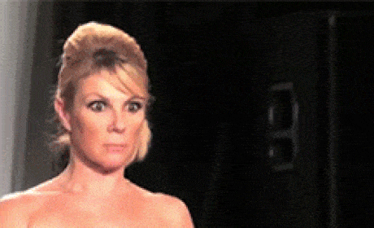
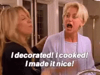

The Real Housewives of New York City, abbreviated RHONY, is an American reality television series that premiered on Bravo on March 4, 2008. Developed as the second installment of The Real Housewives franchise, it has aired fourteen seasons and focuses on the personal and professional lives of several women residing in New York City.

The cast of the first season consisted of Bethenny Frankel, Luann de Lesseps, Alex McCord, Ramona Singer, and Jill Zarin. Other housewives that starred in multiple of the first thirteen seasons include Kelly Killoren Bensimon, Sonja Morgan, Carole Radziwill, Heather Thomson, Dorinda Medley and Tinsley Mortimer. The series was rebooted for the fourteenth season, making it the first series in the franchise to be completely recast. The cast members for the upcoming fifteenth season consists of Sai De Silva, Ubah Hassan, Erin Lichy, Jenna Lyons, Jessel Taank, Brynn Whitfield and Racquel Chevremont, with Rebecca Minkoff serving as a "friend of the housewives".

The success of the show has resulted in three spin-offs: Bethenny Ever After, Bethenny & Fredrik and Luann & Sonja: Welcome to Crappie Lake.